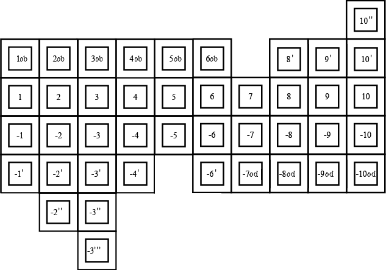
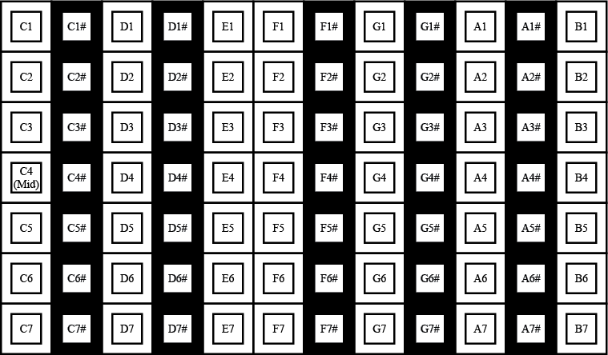
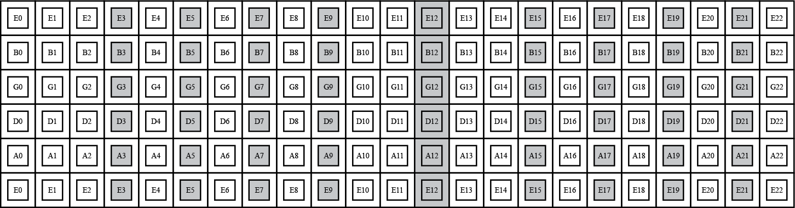

>
Switch to desktop version
(Currently in compatibility version)
Zone 1
Zone 2
Zone 3
Richter diatonic
Diatonic minor
Wilde Tuned diatonic
Wilde Minor diatonic
Powerbender diatonic
C
Db
D
Eb
E
Low F
F
F#
G
High G
Ab
A
Bb
B
Go!
Blues
Minor Pentatonic
Major Pentatonic "Country"
Major
Natural Minor
Harmonic Minor
Melodic Minor
Mixolydian
Dorian
Aeolian
Phrygian
Locrian
Lydian
Gypsy Minor
Gypsy Major
Bebop
Bebop Minor
Bebop Subdominant
Hindu
Spanish
Whole Tone
Full Chromatic
G
Ab
A
Bb
B
C
Db
D
Eb
E
F
F#
Display Scale
Clear Scale
Show Scale Degrees
DVIICE originally created by
tigerhawkt3
, Scale Displayer and Wilde Harmonica Tunings added by Dominick O'Dierno |
Help



Play!